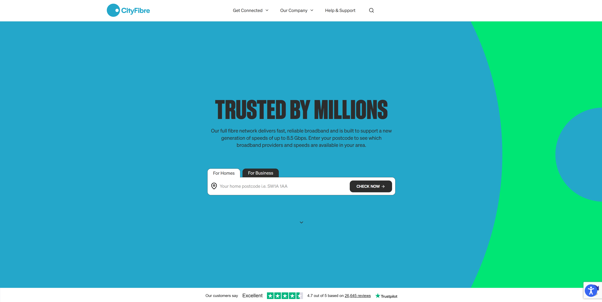
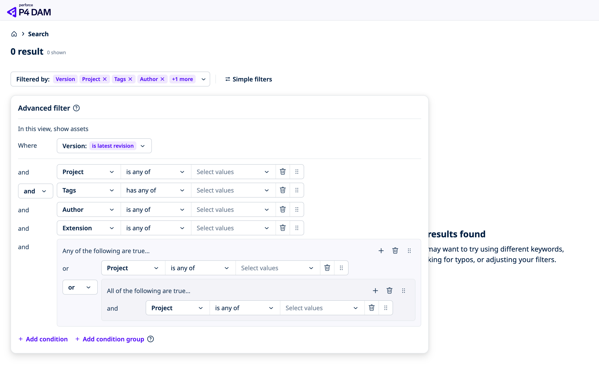

Case studies

Bridging design and engineering to help a smaller team ship 25% more features
I designed and built features for a digital asset management product using Claude Code, helping a smaller development team ship around 25% more features.

Redesigning complex workflows to help users understand errors and fix problems faster
I led user research and redesigned a low-code workflow builder so people could understand errors, inspect their data and fix failed steps.

Redesigning the broadband customer journey to drive a 90% increase in postcode checks
I researched how visitors used CityFibre’s website, redesigned its availability-check journey and applied the new brand across the website and business portal.

Solving complex product challenges through thoughtful interaction design and intuitive interfaces
Here’s a selection of features and interfaces I’ve designed over the years, various complex UX problems with interesting and unique solutions.